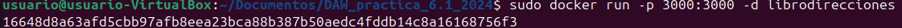
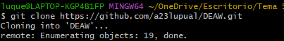
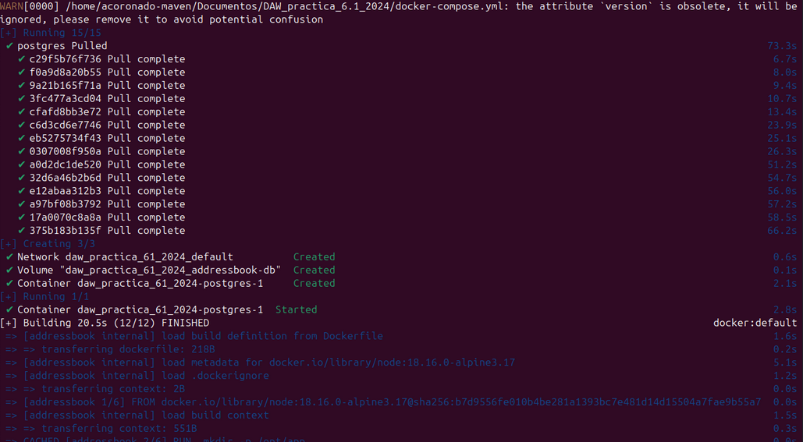
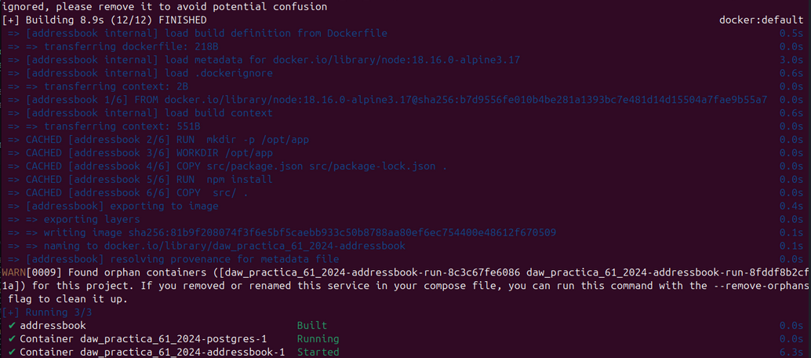
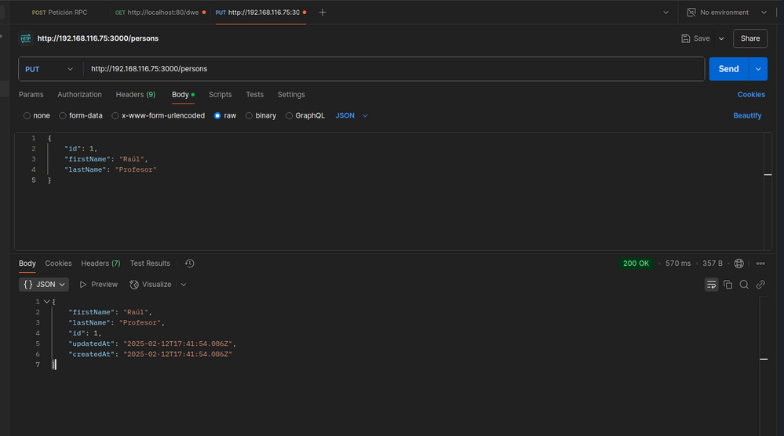
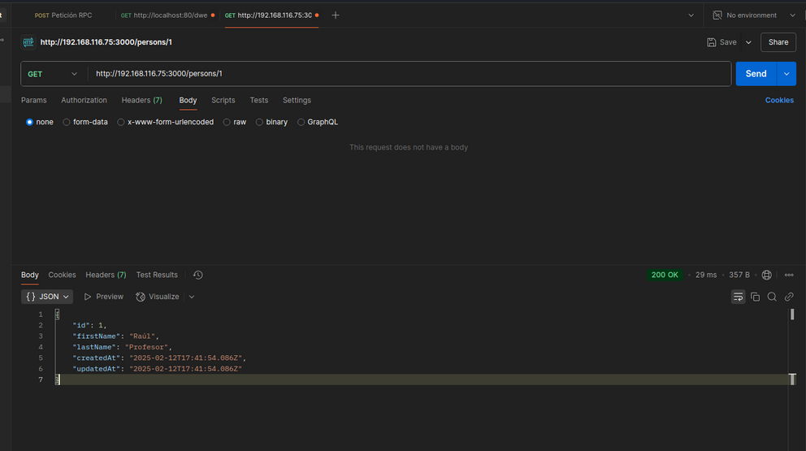
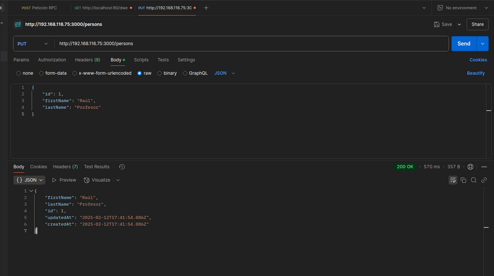
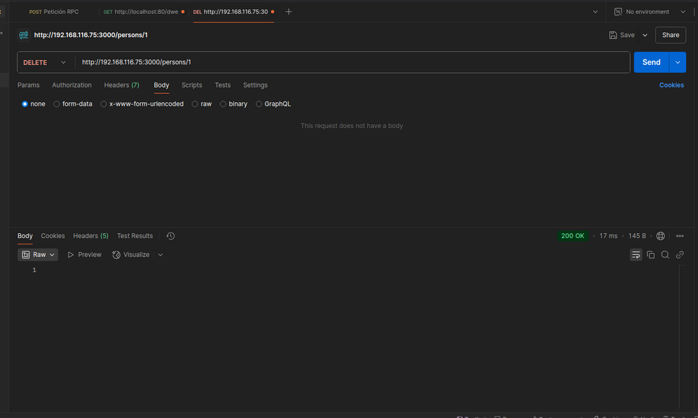
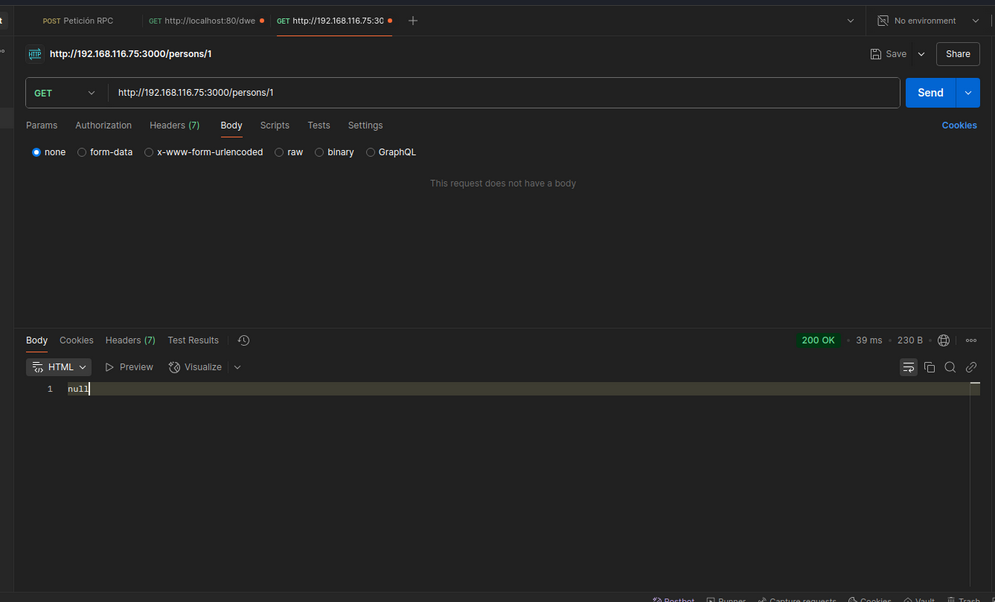

Práctica 6.1 - Dockerización del despliegue de una aplicación Node.js
Introducción
En esta practica vamos a dockerizar una aplicación que hace peticiónes a una API para gestionar direcciones que guardará los datos en una BBDD PostgreSQL.
Ventajas de Dockerizar
-
Configuración rápida del entrono local para el desarrollo.
-
Evitar una inconsistencia en la configuración de entronos.
-
Despliegues rápidos.
-
Mejor control de versiones.
-
Al tener control de versiones se puede hacer rollback al código.
-
Como se suele hacer, se establece un entrono local, de integración, de puesta en escena y de producción.
-
Hay un gran apoyo de la comunidad implementando con grandes imagenes que se pueden reutilizar.
Despliegue con Docker
Clonar el repositorio que usaremos:
$ git clone https://github.com/raul-profesor/DAW_practica_6.1_2024.git
Este es el contenido del archivo Dockerfile, para poder construir la imagen y correr el contenedor.
_____ node:18.16.0-alpine3.17
_____ mkdir -p /opt/app
_____ /opt/app
_____ src/package.json src/package-lock.json .
_____ npm install
_____ src/ .
_____ 3000
_____ ["npm", "run", "start:dev"]
Cada línea es un comando que docker va a ejecutar para la construcción del contenedor.
De esta manera para tener nuestra aplicación corriendo simplemente serán un par de comandos.
Hacemos un build de la imagen de Docker. Le indicamos que ésta se llama librodirecciones y que haga build con el contexto del directorio de trabajo, así como del Dockerfile que hay en el:
$ docker build -t librodirecciones .
Y solo nos quedaría iniciar el contenerdor con la aplicación. Necesatiaremos especificar las opciones -p, mediante le diremos que escuche peticiones de cualquier máquina desde el peusto 3000 (-p 3000:3000), y también la opción -d que lo haremos correr en background. Así quedaría el comando:
$ docker run -p 3000:3000 -d librodirecciones

Solamente nos quedaría comproba el contendedor con http://IP_Maq_Virtual:3000.

Docker Compose
Docker compose nos permite:
- Iniciar y detener múltiples contenedores en secuencia.
- Conectar contenedores utilizando una red virtual.
- Manejar la persistencia de datos usando Docker Volumes.
- Establecer variables de entorno.
- Construir o descargar imágenes de contenedores según sea necesario.
Docker compose usa un archivo yaml para escribir la configuración de la aplicación.
En este caso nosotros usaremos este archivo yaml para el correcto funcionamiento de nuestra aplicación.
version: "3.9"
services:
postgres:
image: postgres:latest
environment:
POSTGRES_USER: postgres
POSTGRES_PASSWORD: postgres
ports:
- '5432:5432'
volumes:
- addressbook-db:/var/lib/postgresql/data
addressbook:
build:
context: .
environment:
DB_SCHEMA: postgres
DB_USER: postgres
DB_PASSWORD: postgres
DB_HOST: postgres
depends_on:
- postgres
ports:
- '3000:3000'
volumes:
addressbook-db:
Para iniciar los contenedores con Docker Compose, simplemente ejecutamos el siguiente comando:
docker compose run addressbook npm run migrate

Ahora vamos a construir los contenedores a partir de las imágenes:
docker compose up --build -d

Y como se puede observar el contenedor ya está funcionando y se puede acceder a él.
Tarea
Probad que la aplicación junto con la BBDD funciona correctamente. El funcionamiento de la API es:
- GET /persons/all muestra todas las personas en el libro de direcciones
- GET /persons/1 muestra la persona con el id 1
- PUT /persons/ añade una persona al libro de direcciones
-
DELETE /persons/1 elimina a la persona con el id 1
-
Función put: Como podemos ver, después de hacer el put, la aplicación nos devuelve los datos que hemos introducido en la base de datos junto al código 200 indicando que se han insertado correctamente.

- Función GET /persons/1 En este caso la aplicación nos devuelve la información de la persona con ID 1

- Función GET /persons/all Aquí la aplicación nos devuelve todas las personas que hay en la base de datos.

- Y por último DELETE /persons/1  Esta petición como su nombre indica borrar a la persona con ID 1 Y si volvemos a intentar acceder a la persona 1 podemos ver que devuelve null, indicando que se ha borrado exitosamente.
